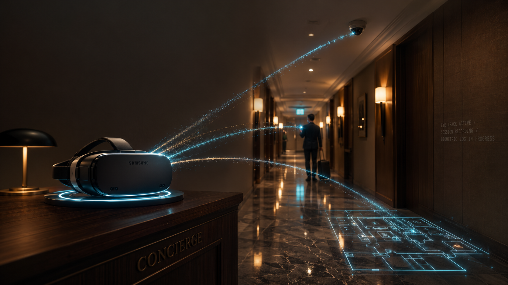
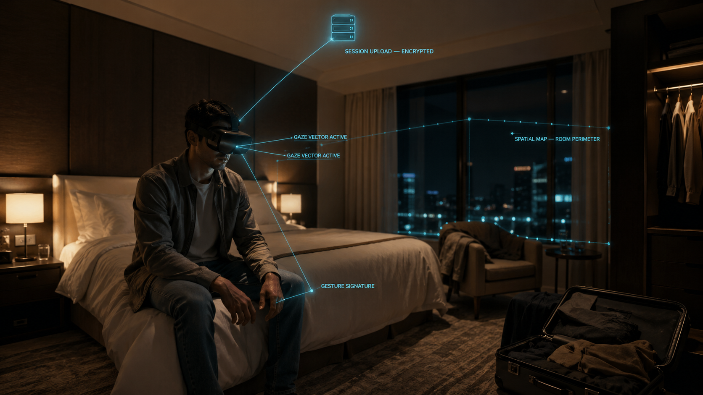
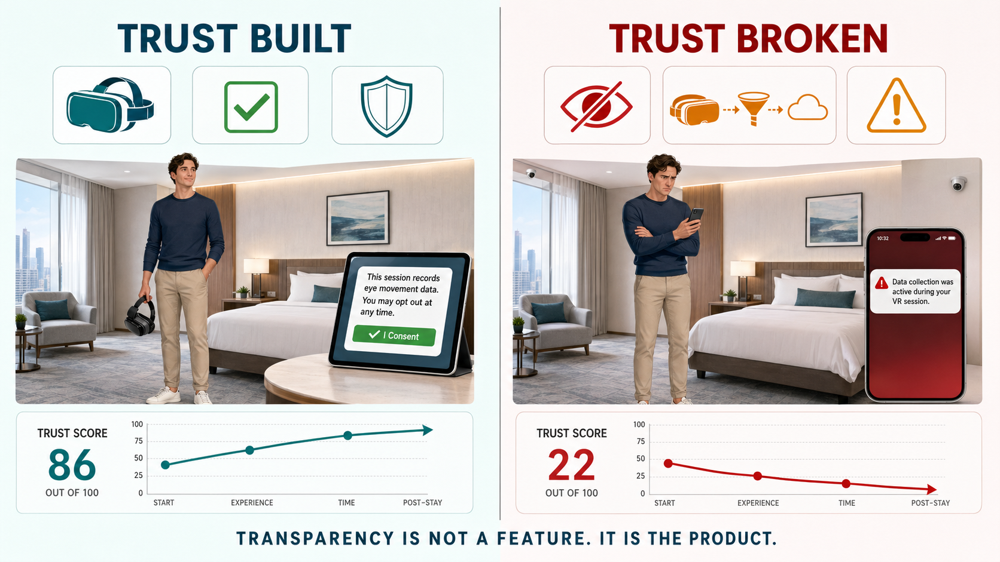
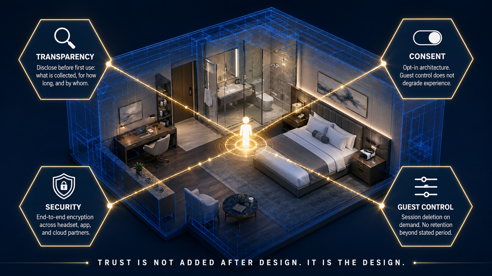

DMBA 6001 Leading Strategic Digital Transformation
Your Hotel Room is Watching You: The Hidden Cost of XR In Hospitality
Marriott’s VR Room Service Trap
The Immersion Paradox
Marriot begun their pilot VRoom Service in September 2015 by using Samsung Gear VR headsets in guest rooms across New York Marriot Marquise and the London Marriott Park Lane. Marriot believed that they had positioned themselves at a critical inflexion point in experiential hospitality (Marriott International, 2015). However, lying deep beneath this novelty laid a key unresolved question in which this blog series is yet to confront:
“When guests put on a VR headset in the intimacy of their own private room, what data does the device capture?”
Blockchain proved it can architect trust through decentralization, AI through predictive accuracy, however XR deteriorates trust through intimacy. More immersive experiences lead to a decrease in the understanding that guests have about what is being recorded during their private moments (Hadan et al., 2024).

When Engagement Becomes Recording
XR devices collect a multitude of biometric data:
- Eye-tracking data
- Body signatures
- Spatial mapping of room environments
- Inferred emotional responses
All of these go beyond what guests would intuitively expect during standard VR usage and these data types have been flagged by researchers as being the most sensitive in the digital era. This is because this data has the capability to reveal key personality traits, indications on health and common behavioral patterns; all of which are never disclosed by guests (Noah & Das, 2024).
This tension was clear through Marriott’s Vroom Service program where Guests were allowed to borrow and use VR headsets to take part in immersive travel experiences. However, Marriot failed to publicly disclose what session data was captured, retained or shared with their technology provider (Samsung) or even third-party platform partners.
This critique goes beyond Marriot. In 2013, Google faced backlash over their Google Glass which highlighted that surveillance anxiety can affect the adoption of innovative technology when users are unable to distinguish what data is being captured and how it is captured. In hospitality, the stakes are considerably higher as guests will wear this technology in the privacy of their intimate space. Guests do not consciously consider what data is being collected when they wear this technology and this exact asymmetry is what sets XR apart from other technologies; it does not feel like surveillance.

Immersion Without Agency is Not Hospitality
Technology is becoming a commodity, hotels are now able to deploy VR headsets, in-room AR overlays and smart concierge interfaces. However, something that cannot be commoditized is guest agency. XR technology is treating guest agency as a core design input, and this is where XR use in hospitality falls short.
Although Marriott’s Vroom service generated positive sentiment and praise for open innovation, they did not provide their guests with a form of standardized disclosure and did not offer any clear opt-out mechanism and failed to provide any sort of transparency about the data-sharing relationships they had with their technology partners (Samsung). Research shows us that XR users are significantly unaware of the various tracking and data collection that occurs during use, ultimately showing us that they cannot protect themselves from what they cannot perceive (Warin et al., 2025).
Hotels that can design trust into their XR deployments can change this dynamic, by implementing concrete disclosure before guest use “This session tracks movement data and will store it for 90 days”. This removes the invisible surveillance factor in the form of an explicit value exchange, allowing guests to manage their consent and opt out without losing core hotel experiences. By doing this, hotels are competitively positioning themselves in the unlikely event of XR systems failure. Traditionally, during these events, the trust breach is blamed upon the hotel brand, regardless of where the failure occurs; and by designing transparency at the initial step before XR use, hotels can contain this liability.

The Future of Trusted Immersion
The future of hospitality is fostered around guest trust, a relationship in which should be centered on agency instead of operational convenience. Hotels that can treat XR infrastructure and trust architectural in tandem will dominate the hospitality ecosystem in terms of guest loyalty.

Reference List
- Hadan, H., Luo, T., Abdi, N., & Wisniewski, P. J. (2024). Privacy in immersive extended reality: Exploring user perceptions, concerns, and coping strategies. In Proceedings of the 2024 CHI Conference on Human Factors in Computing Systems (Article 924, pp. 1–17). Association for Computing Machinery. https://doi.org/10.1145/3613904.3642104
- Noah, N., & Das, S. (2024). Privacy and security in extended reality: Exploring the risks of external biometric data collection. CHI Workshop on XR Technology 2024. Social Science Research Network. https://doi.org/10.2139/ssrn.4780358
- Warin, C., Pak, V., & Reinhardt, D. (2025). Privacy perceptions across the XR spectrum: An extended reality cross-platform comparative analysis of a virtual house tour. Proceedings on Privacy Enhancing Technologies, 2025(1). https://petsymposium.org/popets/2025/popets-2025-0009.pdf
- Marriott International. (2015, September 9). Marriott Hotels introduces the first ever in-room virtual reality travel experience. PR Newswire / Marriott News Center. https://news.marriott.com/news/2015/09/09/marriott-hotels-introduces-the-first-everin-room-virtual-reality-travel-experience
This blog post was researched, written, and argued entirely by the author. Generative AI (OpenAI ChatGPT 5.3) was used to produce visual assets including the hero image and two body diagrams while a Qwen model assisted in research verification and reference accuracy. All arguments, analysis, and critical thinking reflect the author's own perspective and academic work.